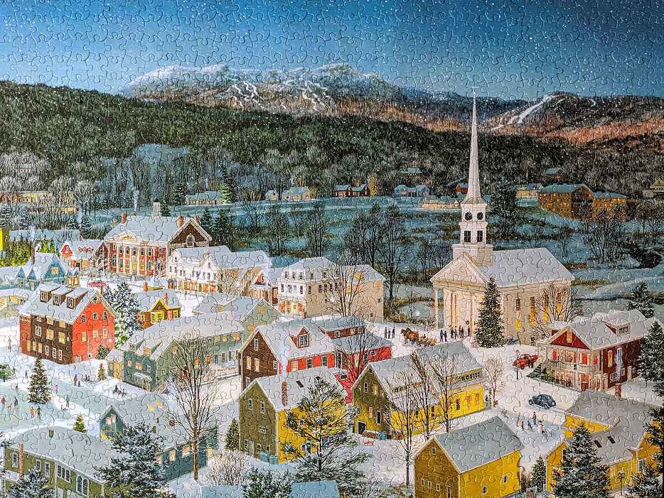

About Me

I've heard it said that the average person will change careers 5—7 times during their working life. My current career is environmental consulting, and I'm ready for a change. I've spent 20 years cleaning up contaminated properties, managing projects, and anayzing laboratory data. The thought of making a drastic change is intimidating. I'm in this class to figure out if web development could be my second career.
On the personal side, I'm a life-long New Jersey resident. I'm from central Jersey but have lived south Jersey for the past 13 years. I'm married with two kids and a dog. In our free time, we enjoy hiking, camping, and skiing. And we all love food - making it and eating it. See some photos from my life in the portfolio.